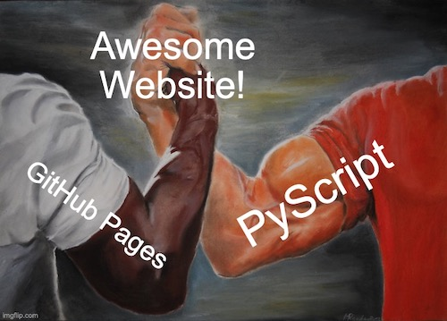

PyScript and Github Pages
By : JTexpo
Date : Oct 12th 2023
Table of Contents
Date : Oct 12th 2023
Table of Contents
What is PyScript?
As the official website of PyScript describes it, PyScript is
"a framework that allows users to create
rich Python applications in the browser" ( PyScript.net ).
Developed and officially unveiled by Anaconda at PyCon 2022, this innovative framework is truly a gem that every Python developer should familiarize themselves with.
To get started with PyScript, you can integrate it into your HTML applications by including the following lines at the beginning of your code:
Similar to JavaScript, PyScript allows for a developer to write code both within the HTML or in a separate file to be imported.
When a website utilizing PyScript is opened, there may be a short delay as PyScript sets up a virtual environment, downloading necessary libraries and assets to enable the execution of Python code within the browser.
By leveraging PyScript, developers can harness the power of Python for creating interactive and dynamic web applications, opening up exciting new possibilities for web development.
Developed and officially unveiled by Anaconda at PyCon 2022, this innovative framework is truly a gem that every Python developer should familiarize themselves with.
To get started with PyScript, you can integrate it into your HTML applications by including the following lines at the beginning of your code:
<link rel="stylesheet" href="https://pyscript.net/latest/pyscript.css"/>
<script defer src="https://pyscript.net/latest/pyscript.js"></script>
<script defer src="https://pyscript.net/latest/pyscript.js"></script>
Similar to JavaScript, PyScript allows for a developer to write code both within the HTML or in a separate file to be imported.
When a website utilizing PyScript is opened, there may be a short delay as PyScript sets up a virtual environment, downloading necessary libraries and assets to enable the execution of Python code within the browser.
By leveraging PyScript, developers can harness the power of Python for creating interactive and dynamic web applications, opening up exciting new possibilities for web development.
What is Github Pages?
GitHub Pages is a website hosting platform provided by GitHub, which is now owned by Microsoft.
This service is free (with paid features available) and is popular among developers for publishing various content like resumes, hobby projects, documentation, and much much more!
It's important to note that in order to use GitHub Pages, the code must be written using the HTML stack.
This means that certain applications based on Python frameworks like Django or Flask may not be compatible with the service.
GitHub Pages primarily supports static websites, so if you're working with a dynamic web application, you may need to explore other hosting options.
This service is free (with paid features available) and is popular among developers for publishing various content like resumes, hobby projects, documentation, and much much more!
It's important to note that in order to use GitHub Pages, the code must be written using the HTML stack.
This means that certain applications based on Python frameworks like Django or Flask may not be compatible with the service.
GitHub Pages primarily supports static websites, so if you're working with a dynamic web application, you may need to explore other hosting options.
GitHub Pages + PyScript
Previously, Python applications hosted on GitHub Pages were a rarity.
However, with the introduction of PyScript, Python developers now have the freedom to easily deploy
their projects for global visibility.
This is facilitated by PyScript's streamlined deployment process, which eliminates the need for any additional environment setup beyond the two lines of code mentioned above.
The synergy between Python and PyScript creates a powerful toolset, providing web developers with unprecedented flexibility in their projects.
This is facilitated by PyScript's streamlined deployment process, which eliminates the need for any additional environment setup beyond the two lines of code mentioned above.
The synergy between Python and PyScript creates a powerful toolset, providing web developers with unprecedented flexibility in their projects.

Why Not JavaScript?
Some of you may be wondering what benefits PyScript has over JavaScript.
While JavaScript is used on this website, there are compelling reasons for choosing PyScript.
First, PyScript's capability to import libraries significantly amplifies its power compared to JavaScript. Python's compatibility with a wide range of libraries, including Numpy, Matplotlib, and TensorFlow, exemplifies this advantage. This means that applications developed with PyScript have the potential to be more functionally complex than their JavaScript counterparts.
Second, Python is renowned for its accessibility, particularly for novice and hobbyist developers. This inclusivity expands the pool of developers capable of creating websites, potentially including those who may have found learning JavaScript initially intimidating.
Lastly, it's important to note that both languages can coexist. Web development doesn't need to be an either-or situation. PyScript and JavaScript can complement each other, allowing for a more versatile approach to building applications.
First, PyScript's capability to import libraries significantly amplifies its power compared to JavaScript. Python's compatibility with a wide range of libraries, including Numpy, Matplotlib, and TensorFlow, exemplifies this advantage. This means that applications developed with PyScript have the potential to be more functionally complex than their JavaScript counterparts.
Second, Python is renowned for its accessibility, particularly for novice and hobbyist developers. This inclusivity expands the pool of developers capable of creating websites, potentially including those who may have found learning JavaScript initially intimidating.
Lastly, it's important to note that both languages can coexist. Web development doesn't need to be an either-or situation. PyScript and JavaScript can complement each other, allowing for a more versatile approach to building applications.
Closing Thoughts
In conclusion, PyScript presents itself as a potent tool for web developers seeking to deploy
projects on platforms like GitHub Pages, a strategy I personally employ.
PyScript complements JavaScript rather than replaces it, such that the combination of these two languages yields a powerful development environment.
For instance, I utilize PyScript for my machine learning projects, leveraging the robust Python libraries and user-friendly syntax. Simultaneously, I incorporate subtle dynamic HTML style updates with JavaScript, benefiting from its lightweight and efficient execution.
I hope this blog serves as an inspiration for you to consider integrating PyScript into your upcoming projects, if you haven't already!
PyScript complements JavaScript rather than replaces it, such that the combination of these two languages yields a powerful development environment.
For instance, I utilize PyScript for my machine learning projects, leveraging the robust Python libraries and user-friendly syntax. Simultaneously, I incorporate subtle dynamic HTML style updates with JavaScript, benefiting from its lightweight and efficient execution.
I hope this blog serves as an inspiration for you to consider integrating PyScript into your upcoming projects, if you haven't already!